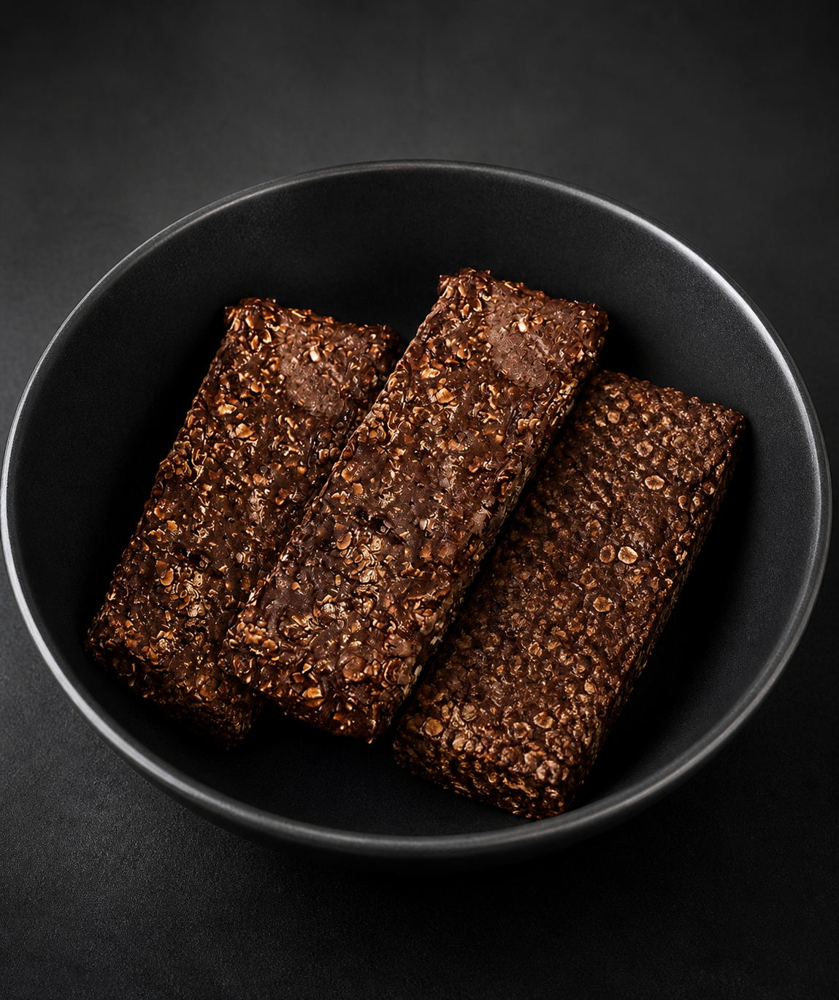

Barres protéinées maison

Ingrédients
- 40g de flocons d'avoine
- 10g de miel
- 60g de whey
- 10g de beurre de cacahuète 100%
Quantités prévues pour 3 portions.
Préparation
- Mélanger les flocons d'avoine, le miel, la whey et le beurre de cacahuète jusqu'à obtenir une pâte homogène
- Former des barres avec la préparation
- Placer les barres au congélateur pour les faire durcir
- Sortir la barre quelques minutes avant de la manger
- Ne pas la sortir trop tôt, sinon elle redevient molle
Valeurs nutritionnelles (approx.)
Par portion : 158 kcal • 18 g protéines • 4 g lipides • 12 g glucides • 2 g fibres